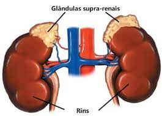

Curiosidades
Existem cerca de 400 túbulos seminíferos por testículo, produzindo entre 50 e 150 milhões de espermatozóides por dia;
Quase toda a testosterona produzida vem dos testículos, cerca de 5% vem das glândulas suprarrenais;
